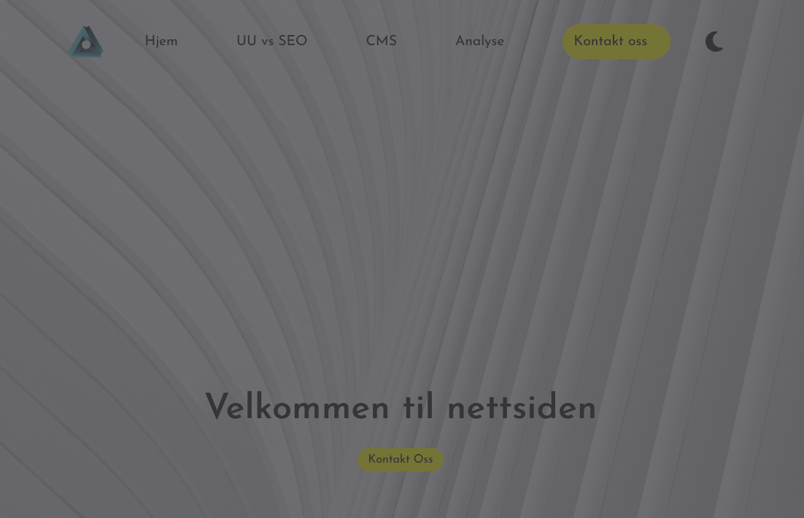
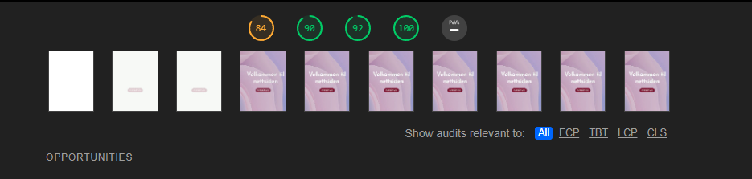

Analyse av dette nettstedet
Her er en analyse av dette nettstedet, der jeg går igjennom bruken av SEO og UU. Bruker diverse verktøy for å komme fram til svarene mine.
Skrevet av Markus Vullum
Analyse
Dette er en analyse av denne nettsiden, markusvullum.online. Denne analysen består av analyse av nettsidens UU og SEO. Når det kommer til UU kommer jeg til å bruke WCAG 2.0-standarden for nettsidens UU, dette er en liste som omfatter krav en nettside i Norge må ha. Jeg skal også analysere denne nettsidens SEO, altså søkemotoroptimalisering som handler om hvor lett det er å finne fram til denne nettsiden ved et søk. Jeg kommer også til a ta i bruk noen verktøy for å sjekke nettsidens optimalitet. Nedenfor ser du en tabell som viser endringer, før og etter.
Som sagt har jeg utført en test og sjekket opp mot WCAG 2.0 kravene som ligger ute på uutilsynets nettsider. På deres nettsiden ligger en rekke krav og de er blitt satt inn i et excel sokument, dette dokumentet har jeg brukt til å sjekke opp mot min egen nettside. Dette excel dokumentet har jeg lastet ned og gjort om til en pdf fil. Det er den som ligger under her.
Her er pdf-filen
Jeg har også gjort noen små endringer på nettsiden underveis; 1. Jeg har endret bakgrunn på main-artikkel og hoved bakgrunn 2. Jeg har endret på fargen på "kontakt oss" og "les mer" knappene 3. Lagt til root i css dokumentet og mørkt tema på nettsiden som styres av javascript.
Beskrivelse
Før
Etter
Her har jeg endret spesialtegn som "<", "&" osv til entities. Dette er fordi det skal bli lettere for nettleseren å lese opp disse spesialtegnene, istedenfor å f.eks tro at “<” er en tag (W3Schools, 2022).
Lagt til mørkt tema på nettsiden. Dette er for å gjøre det lettere for lesere med svakt syn eller som er fargeblinde å lese nettsiden. Bildene illustrerer også hvordan en svaksynt person som sliter med å se forkjell på kontraster vil oppfatte nettsiden med og uten mørkt tema.

HTML validator fra W3C er brukt (W3C, 2022). Denne nettsiden blir brukt til å validere HTML koden som blir skrevet. F.eks her er slutt tagen på et div element som mangler. Dette kommar da frem i validatoren som gjør det enkelt å rette opp i feil.
Lighthouse er en applikasjon som som man kan legge til i chrome. Lighthouse gjør en analyse av selve nettsiden din og gir deg en rapport tilbake med tilbakemeldinger på hva som er bra og dårlig. Her kan du se at først har jeg veldig store bilder noe som tar mye ekstra data og plass.

UUtilsynet har på sin nettside krav som følger WCAG 2.0 sine krav for et nettsted, der er det rangeringer fra A- AA- til AAA-krav. Før endringene scoret jeg ganske dårlig på navigasjon på nettstedet med tab tasten. Det som er fikset på er at dersom bruker bruker tab tasten for å bevege seg rundt på nettstedet, kommer det som er i fokus til å få en orange tykk ytterlinje rundt seg. I motsettning til en svart og tynn ytterlinje som er default.
WAVE er en nettside som sjekker hvor tilgjengelig nettsiden min er, her kan du se at før endringer har jeg 8 error og 15 kontrast error. Det vil si at for fargeblinde som kan slite med kontraster vil slite med å lese på nettsiden min. Men ved siden av kan du se kontrasten er veldig bra hvis man bytter modus.